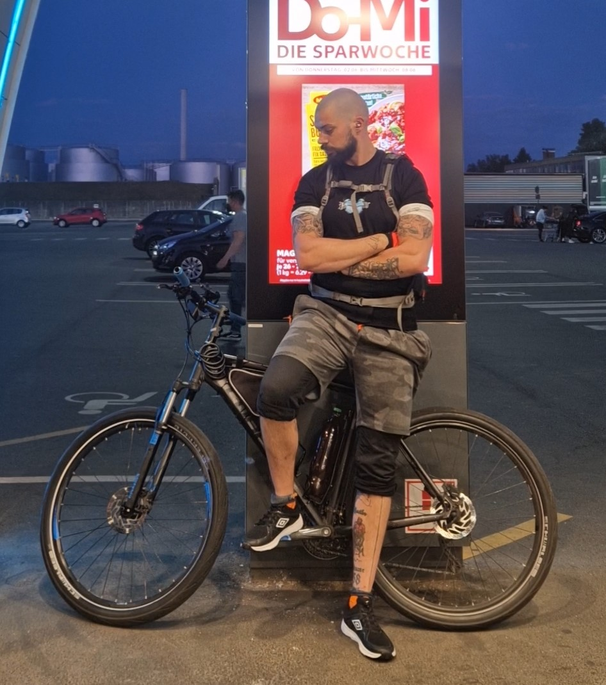

Wer steckt dahinter?
Kein Ernährungsberater, kein Personal Trainer – nur jemand, der es selbst durchgemacht hat und weiß, was funktioniert.

Sport, Rückschläge und ein ehrlicher Neustart
Sport hat mir im Leben immer Freude gemacht. Doch gesundheitliche Probleme haben mich mehrfach zurückgeworfen – manchmal für ein halbes, manchmal für ein ganzes Jahr. Kein Training, wenig Bewegung, und der ein oder andere Snack zu viel.
Als ich langsam wieder anfangen konnte, war die Form weg. Die Kondition auch. Aber genau hier liegt das Gute an der Geschichte: Ich weiß heute, wie es funktioniert. Ich habe es selbst erlebt – den Weg zurück, Schritt für Schritt.
Und weil ich inzwischen sehr gut weiß, wie man überflüssige Pfunde sicher und nachhaltig wieder loswird, möchte ich diesen Plan gerne weitergeben und dich dabei unterstützen.
Das Beste daran: Der Plan ist kostenlos. Es geht mir in erster Linie darum, meine Erfahrungen weiterzugeben – ohne Produkte, ohne Affiliate-Links, ohne Hintergedanken.
Kein Schnellschuss
Nachhaltige Ergebnisse entstehen nicht über Nacht. Dieser Plan setzt auf langfristige Gewohnheiten statt kurzfristige Crash-Diäten.
Ehrlich & direkt
Keine beschönigten Versprechen. Was hier steht, basiert auf echten Erfahrungen – auch mit Rückschlägen und schlechten Tagen.
Komplett kostenlos
Der gesamte Plan, alle Informationen – ohne Paywall, ohne versteckte Kosten. Wissen teilen ist der Sinn dieser Seite.